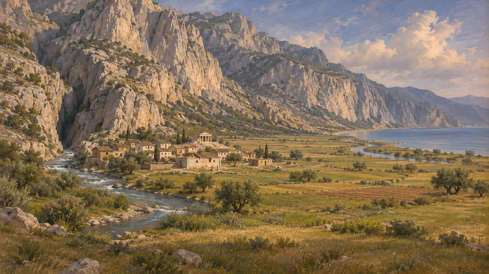
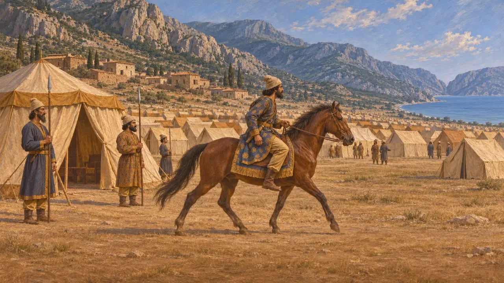
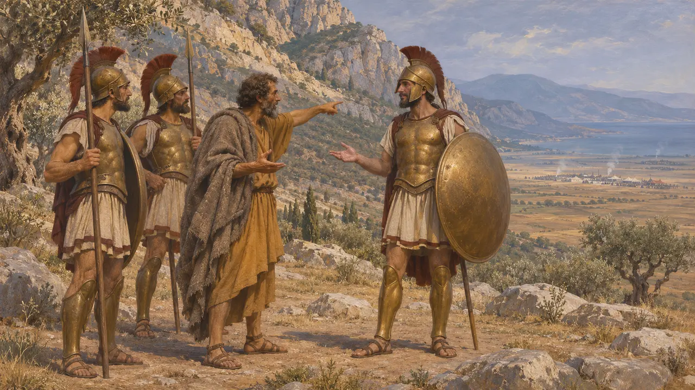
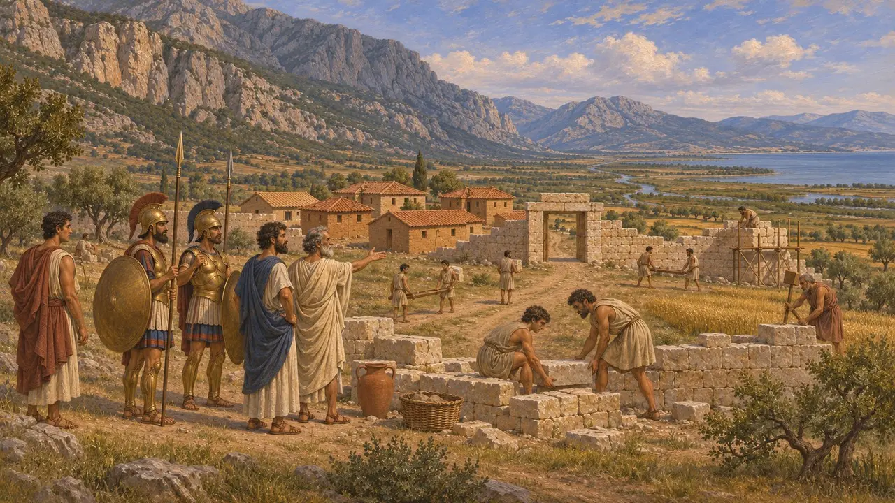

Traquis
Ciudad y llanura de Malis bajo el paso de las Termópilas, donde acampó Jerjes, 480 a. e. c.
En el juego: Nivel 10: Las Puertas Calientes
Traquis era una pequeña ciudad de los malios en la llanura, a la cabecera del golfo Maliaco, bajo los acantilados que Heródoto llama las rocas de Traquis. En el 480 a. e. c. Jerjes acampó en sus tierras mientras los griegos defendían el paso de las Termópilas, justo al este.
En el juego: El nivel de las Termópilas se construye en la llanura de Traquis: allí se alzan la ciudad-campamento del Rey, sus granjas y el Pabellón del Rey, y los habitantes hablan del calor, del polvo y de los griegos de Traquis.

La llanura bajo las rocas
Relato antiguoHeródoto describe un espacio llano en torno al golfo Maliaco, ancho en unas partes y estrecho en otras, encerrado por altas montañas llamadas las rocas de Traquis. Traquis se hallaba a cinco estadios del río Melas, donde la llanura era más ancha, y el Asopo salía de una garganta de las montañas al sur de la ciudad.
Herodotus 7.198-199

El campamento del Rey
Relato antiguoHeródoto dice que Jerjes estaba acampado en la región de Traquis, en el país de los malios, y los griegos dentro del paso. Él dominaba todo lo que quedaba al norte de Traquis, y ellos todo lo que quedaba al sur. El jinete del Rey partió de este campamento para observar a los espartanos ante el muro.
Herodotus 7.201, 7.208

Un hombre de Traquis y la sombra
Relato antiguoHeródoto dice que, antes de la batalla, un hombre de Traquis dijo a los griegos que los arqueros persas eran tantos que sus flechas ocultarían el sol. El espartano Dieneces respondió que entonces lucharían a la sombra. La historia es de Heródoto, y él dice que fue uno de varios dichos que se recordaban de Dieneces.
Herodotus 7.226

Traquis después de la guerra
En los documentosEn 426 a. e. c. Esparta fundó una nueva colonia, Heraclea de Traquis, cerca de la ciudad antigua, para controlar el camino hacia el sur a través del paso. Lo cuenta Tucídides. El campamento persa del 480 a. e. c. no se ha hallado sobre el terreno, y la línea de costa se ha desplazado mucho mar adentro desde entonces, pues el Esperqueo ha ido depositando cieno.
Thucydides 3.92-93
Fuentes
- Herodotus 7.176, 7.198-201, 7.226
- Thucydides 3.92-93
- W. K. Pritchett, Studies in Ancient Greek Topography 1, 1965